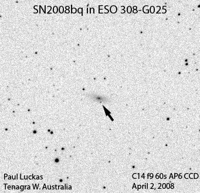

Tenagra Western Australia bags its 11th Supernova - SN2008bq.

Circular No. 1328
Central Bureau for Astronomical Telegrams
INTERNATIONAL ASTRONOMICAL UNION Mailstop 18, Smithsonian Astrophysical Observatory,
Cambridge, MA 02138, U.S.A.
IAUSUBS@CFA.HARVARD.EDU or FAX 617-495-7231 (subscriptions)
CBAT@CFA.HARVARD.EDU (science)
URL http://cfa-www.harvard.edu/iau/cbat.html ISSN 0081-0304
Phone 617-495-7440/7244/7444 (for emergency use only)
SUPERNOVA 2008bq IN ESO 308-G25
P. Luckas, Perth, W. Australia; O. Trondal, Oslo, Norway; and M. Schwartz, Patagonia, AZ, U.S.A., report the discovery of an apparent supernova (mag 17.0) on unfiltered CCD frames taken with the 0.35-m telescope at Perth on Apr. 2.47 and 5.54 UT in the course of the Tenagra Observatory Supernova Search. The new object is located at R.A. = 6h41m02s.51, Decl. = -38o02'19".0 (equinox 2000.0), which is 4".6 west and 10".1 south of the center of ESO 308-G25 (which itself has position end figures 02s.90, 08".9). Nothing was visible at the position of 2008bq on an image taken by Luckas on Mar. 17.55 (limiting magnitude about 18.0) or on a Digitized Sky Survey image from 1994 Nov. 11 (limiting red mag 21.0).
Electronic Telegram No. 1329
Central Bureau for Astronomical Telegrams
INTERNATIONAL ASTRONOMICAL UNION M.S. 18, Smithsonian Astrophysical Observatory,
Cambridge, MA 02138, U.S.A.
IAUSUBS@CFA.HARVARD.EDU or FAX 617-495-7231 (subscriptions)
CBAT@CFA.HARVARD.EDU (science)
URL http://www.cfa.harvard.edu/iau/cbat.html
SUPERNOVAE 2008bq M. Stritzinger and N. Morrell, on behalf of the Carnegie Supernova Project (CSP), report that they have obtained spectra (range 380-920 nm) of 2008bm (cf. CBET 1320), 2008bp (cf. CBET 1326), and 2008bq (cf. CBET 1328) with the Las Campanas Observatory DuPont Telescope (+ WFCCD) on Apr. 7.1-7.3 UT.
The spectrum of 2008bq indicates that it is a type-Ia supernova near maximum light. With the aid of SNID, they find 2008bq to be similar to supernova 2003du at one day before maximum light. Adopting a host-galaxy recession velocity of 10193 km/s (derived from emission lines in a spectrum of the host galaxy), the Si II absorption feature yields an expansion velocity of roughly 11000 km/s. NOTE: These 'Central Bureau Electronic Telegrams' are sometimes superseded by text appearing later in the printed IAU Circulars. (C) Copyright 2008 CBAT 2008 April 8 (CBET 1329) Daniel W. E. Green